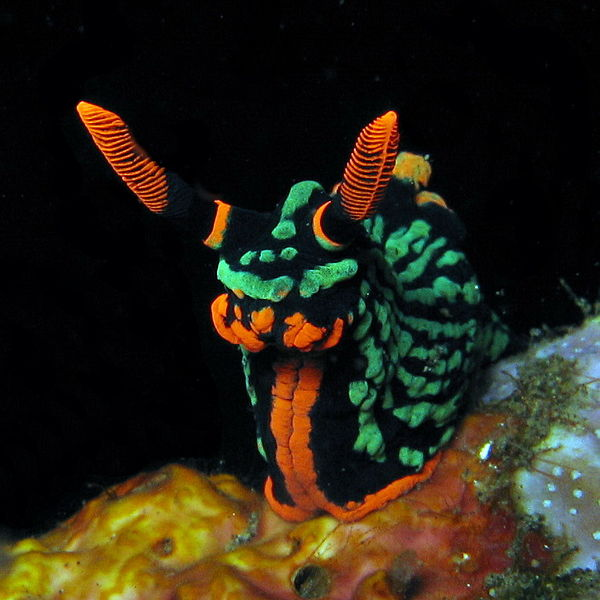

SCP-1867 in containment.
Item #: SCP-1867
Object Class: Anomalous Organism (sapient)
Containment Class: Passive
Hazard Rating: Green
Standard Containment Policies:
- Aquatic specimen tank (small)
- Environment and care requirements identical to that of non-anomalous members of the species
- Associated items placed in Secure Storage Vault 16
- Amenities available upon request
Special Containment Procedures:
- All descriptions of anomalous persons, places, or objects made by SCP-1867 must be correlated by at least two other sources before resources may be allocated for further research.
Description: SCP-1867 is a nudibranch of the species Nembrotha kubaryana (variable neon slug), measuring 11.7 cm (4.6 inches) in length. There are no physical differences between SCP-1867 and any other member of its species.
SCP-1867 is sapient and capable of telepathic communication with the same range as a typical human voice. It identifies itself as “Lord Theodore Thomas Blackwood”, a British explorer and naturalist, and speaks with terminology and style appropriate to late nineteenth century England. It is generally friendly and cooperative with researchers.
SCP-1867 makes repeated claims of past exploits and accomplishments, including service in the Second Opium War, expeditions to remote regions of the world, and encounters with various rare creatures and uncontacted peoples. Despite the questionable validity of many of its claims, SCP-1867 has shown in-depth knowledge of geography, zoology, botany, archaeology, anthropology and linguistics relating to its claimed regions of exploration, as well as more esoteric fields such as obscure mythology, mysticism, and cryptozoology. SCP-1867 does not seem to realize, or willfully ignores, any inconsistencies in its own recollections as well as any events or information dating after approximately 1910.
When requested to give proof of its exploits, SCP-1867 provided an address near █████████, England, claiming that it would be “more than willing to donate [its] collection.” Investigation of the address led to a cottage owned by one Ms. █████ ███████████, who claimed to be “keeping the house for Lord Blackwood”. Further questioning failed to reveal any details of SCP-1867’s nature or origins beyond what information SCP-1867 had already provided. Ms. ███████████ died of heart failure five days after Foundation agents began investigations.
Investigation of the cottage revealed an underground vault containing over three thousand artifacts, zoological and botanical specimens, a library containing over five thousand items, and a functioning, if outdated, laboratory. All materials within the collection were cataloged, removed and relocated by the Foundation over the course of three weeks.
Addendum-01: A full listing of items recovered from SCP-1867’s collection may be found in Document 1867-VL. A summary of noteworthy items is as follows:
- 116 unknown species of plants
- 107 unknown species of insects
- 28 unknown species of lizards
- 23 unknown species of fish
- 14 unknown species of amphibians
- 12 unknown species of mammals
- Fossils pertaining to 8 unknown species of dinosaur
- Fossils pertaining to 12 unknown species of prehistoric mammal
- Artifacts belonging to 29 unknown indigenous cultures
- 35 hand-written journals containing recordings of events described by SCP-1867: written accounts match with verbal, save variations and exaggerations on the part of SCP-1867 in re-telling, and have been dated to the appropriate time period of the events described.
- 20 kilograms of processed opium
- Collection of firearms of make and model not correlating with any known manufacturers, including three wide-bore muskets marked as “Dr. B. T. Moth’s Effective Particle Destabilizers.” These items are non-functional.
- Detailed globes of Mercury, Venus, Mars, and the Galilean moons, accompanied by notes detailing possible paths of surface exploration.
- A heavily modified four-seat horse carriage, containing instruments of unknown purpose. A note attached to the door reads “On the fritz. Speak with Henry” in handwriting matching that of the journals.
- [DATA EXPUNGED] – Four agents were killed after activation before the object was destroyed. When questioned about the item, SCP-1867’s response was “I did warn you to be careful around my collection. That bloody thing nearly took my head off in Woking back in ninety-seven when I found it.”
Addendum-02:
The following interview is dated ██/██/2012
Dr. ███████: Good morning, Lord Blackwood.
SCP-1867: Ah, good morning Doctor! Wonderful to see you. Come in, come in, have yourself a seat. Now if I remember correctly, the last time you were here I was telling you about the time I was captured by the Ubula tribe of the Congo…
Dr. ███████: Actually, I have some questions about that story, today. Our research turned up no trace of that people. They don’t seem to exist.
SCP-1867: Of course not! There weren’t any of the Ubula left after the village was attacked by Mokèlé-mbèmbé. I still regret not being able to bag that monster when I had the chance. It is a persistently elusive creature…
Dr. ███████: Hm. That’s a stretch, sir. Do you have any corroborating evidence? Just to make sure what you’re saying is true. There’s always a chance that your vault was filled with fakes.
SCP-1867: Nonsense! I would never fabricate any of my work. Why, it’s against the very heart of being a naturalist! While I am repeatedly amazed by your institution here, you seem to be missing the explorer’s spirit. When I scaled the Himalayas in search of the Monks of the Golden Mountain, did I worry about what others had said about them? Of course not! I went and found out for myself! Climbed those mountains with my own two hands!
Dr. ███████: [short pause] You do realize that you’re a sea slug, right?
SCP-1867: Good heavens, boy, have you been drinking? That’s utterly ridiculous. If you can’t be bothered to be sensible I have no reason to speak with you. Go get yourself a nice cup of tea and sober up.
{kind=link}